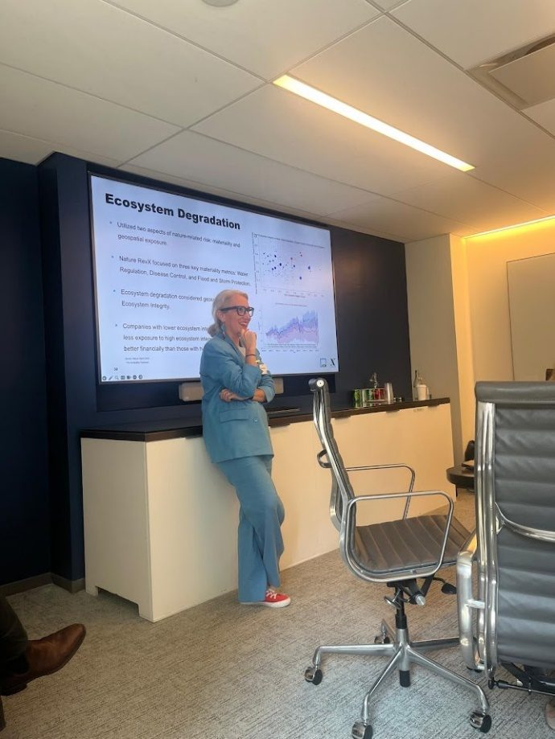

Finance &Climate
Finance is never merely technical. Its categories, incentives, time horizons, and assumptions shape which futures are made investable, and which communities, ecosystems, and forms of value remain overlooked.

My work in finance and climate focuses on the relationship between rigorous analysis, long-term value creation, resilience, and the broader social and ecological systems within which markets operate.
Sistematica Research & Advisory
Independent research and advisory for organizations navigating sustainable and values-aligned finance, climate resilience, and systems-level questions.
Visit Sistematica → PartnerUniverse Partners
As a partner in Universe Partners, I contribute to work advancing investment approaches oriented toward climate resilience and the conditions for durable adaptation.
Learn about Universe Partners ↗Boards & other initiatives
Arketa
Arketa is a think tank exploring degrowth, post-growth economics, and the institutional transformations necessary for ecological sustainability and collective flourishing.
This work complements my broader interest in economic systems that recognize planetary limits, democratic participation, care, and forms of prosperity not reducible to aggregate growth.
Visit Arketa ↗ Senior AdvisorAll About Water
I advise All About Water, a startup working at the intersection of agtech, climate technology, and finance. Its platform uses climate and hydrological data to support smarter irrigation, water-risk management, and agricultural planning, connecting water intelligence with more resilient farming and better-informed investment decisions.
Visit All About Water ↗collaborationsGet in touch →